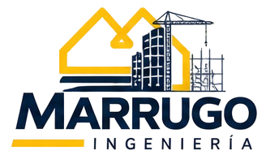
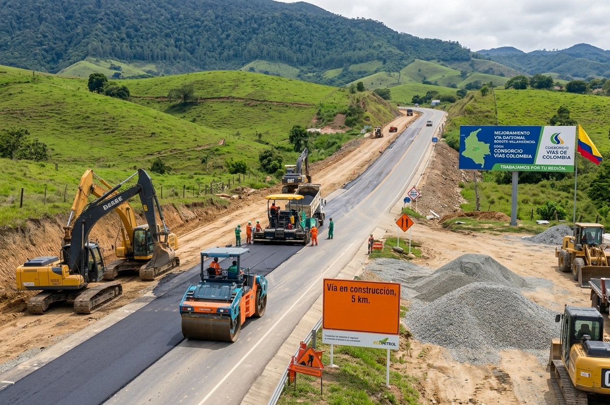
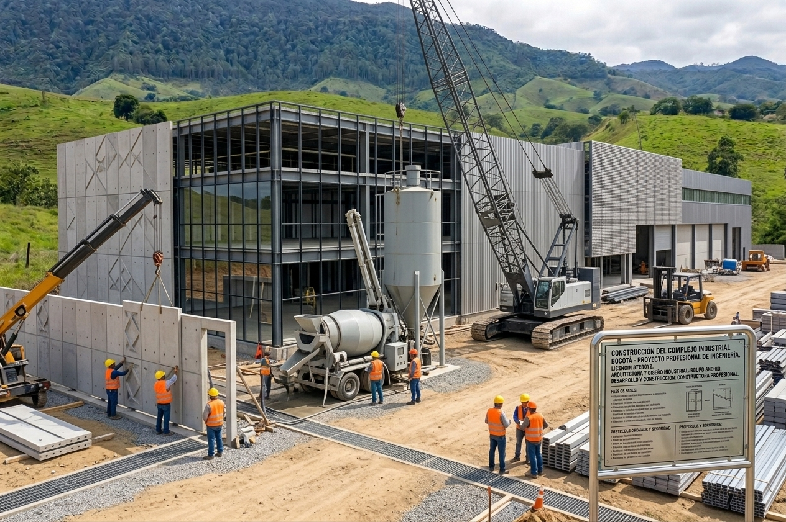
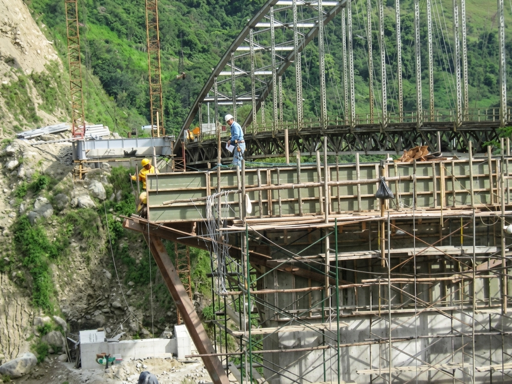
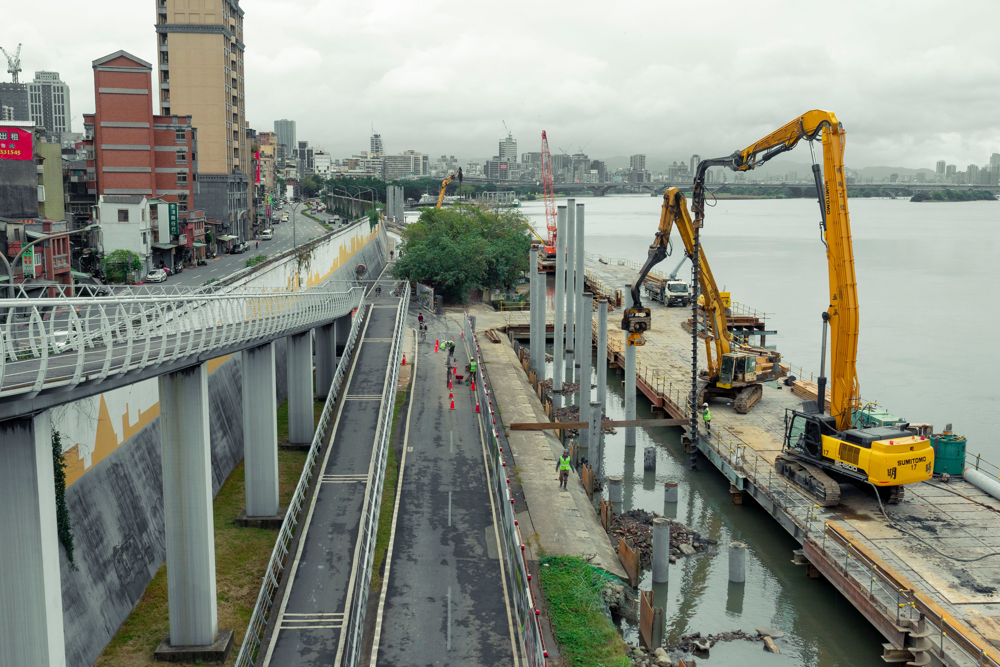

100+
Proyectos
Ejecutados
La Guajira, Colombia

INGENIERO CIVIL
HÉCTOR RAFAEL
MARRUGO PÁJARO
MÁS DE 45 AÑOS
DE EXPERIENCIA
Liderando proyectos de infraestructura con calidad, seguridad y compromiso. Experiencia comprobada en obras viales, puentes, acueductos, alcantarillados, obras de drenaje y proyectos industriales.

45+
AÑOS
DE EXPERIENCIALiderazgo
Calidad
Resultados
45+
Años de
Experiencia
50+
Equipos
Liderados
Colombia
Proyectos en
diferentes regiones
EXPERIENCIA COMPROBADA
Proyectos Destacados

Expansión Refinería
Ecopetrol
Cartagena

Puente Quebrada
Blanca
Bogotá–Villavicencio

Mantenimiento Vial
Barrancabermeja–Lebrija
Santander

Obras Hidráulicas
y Acueductos
La Guajira
SOLUCIONES DE INGENIERÍA
Mis Servicios
Dirección, construcción, supervisión e interventoría para proyectos de infraestructura, integrando experiencia técnica, gestión y control de obra.
Dirección de Proyectos
Planeación, coordinación y dirección integral de proyectos de construcción e infraestructura.
Interventoría y Supervisión
Seguimiento técnico, administrativo y operativo para garantizar calidad, cumplimiento y control.
Obras Viales y Puentes
Experiencia en carreteras, puentes, estructuras de apoyo, obras de drenaje y mantenimiento vial.
Infraestructura Hidráulica
Acueductos, alcantarillados, drenajes, canales y soluciones para manejo de agua.
Estructuras de Concreto
Construcción y dirección de estructuras en concreto reforzado y elementos estructurales de obra.
Montaje de Estructuras Metálicas
Dirección de montaje, desmontaje y ejecución de estructuras metálicas en proyectos industriales.
TRAYECTORIA PROFESIONAL
Experiencia que Construye Futuro
2000 – 2002
ÁLVAREZ & COLLINS S.A.
Director y Representante Legal
Construcción de obras de drenaje
en la carretera Cartagena–Barranquilla,
incluyendo alcantarillas, cunetas,
muros de contención y disipadores
de energía.
También construcción de bordillos,
andenes, canales de aguas lluvias
y movimiento de tierras en proyectos
de infraestructura vial.
2005 – 2007
CONSTRUCTORA CHUZACÁ
Director de Proyectos
Dirección de trabajos de mantenimiento en la vía Barrancabermeja–Lebrija, incluyendo muros de contención, box culvert, alcantarillas, gaviones, filtros, cunetas, bermas, excavaciones, rellenos y pedraplenes.
2009 – 2011
CONSTRUCTORA CHUZACÁ
Ingeniero Residente
Construcción del nuevo Puente
Quebrada Blanca en la vía
Bogotá–Villavicencio.
Dirección de pilotes, caissons,
dados, vigas de apoyo, pila principal,
columnas metálicas y montaje de vigas
longitudinales y transversales.
2009 – 2011
PROYECTOS COMPLEMENTARIOS
Acueducto y Gestión Educativa
Participación en el Consorcio
Aguas del Retén para la construcción
y ampliación del acueducto y
alcantarillado del municipio
de El Retén, Magdalena.
También desempeño como docente de
matemáticas en la Institución
Educativa Brisas del Diamante
de Bogotá.
2012 – 2016
CBI COLOMBIANA S.A. – CARTAGENA
Capataz General / Ingeniero Civil
Dirección de trabajos de montaje
estructural durante la expansión
de la Refinería de Ecopetrol
en Cartagena.
Intervención en las áreas 130 y 110,
incluyendo chimeneas, pipe racks,
subestación eléctrica, condensadores
y trabajos de desmantelamiento
y montaje estructural.
2020 – 2021
CONSTRUCTORES DE LA PROVINCIA S.A.S. – CONDELPRO
Ingeniero Residente
Reconstrucción y mantenimiento
de cámaras en la línea
Tibitoc–Usaquén del Acueducto
de Bogotá.
Supervisión y control de actividades
de obra para mantenimiento de
infraestructura hidráulica.
2022 – 2023
MARRUGO INGENIERÍA
Gerente Propietario
Atención y gestión de negocios
particulares relacionados con
compra y venta de vivienda.
Construcción de granja piloto para
agricultura mediante riego por goteo
y desarrollo de proyectos de granjas
tecnificadas, productivas y
autosostenibles.
05/2023 – 08/2023
ESPARZA INGENIERÍA S.A.S.
Ingeniero Residente de Interventoría
Interventoría del Parque Sacúdete ubicado en la urbanización Las Casitas en Villanueva, La Guajira.
2000 – Actualidad
TRAYECTORIA PROFESIONAL
Ingeniería, Construcción e Infraestructura
Trayectoria profesional en carreteras, puentes, refinerías, acueductos, alcantarillados, drenajes, estructuras metálicas, concreto reforzado, dirección de proyectos e interventoría.
1 / 9
TRAYECTORIA EMPRESARIAL
Empresas Destacadas
Experiencia profesional desarrollada en empresas y proyectos de reconocimiento nacional dentro de los sectores de construcción, infraestructura e industria.
ECOPETROL
CBI Colombiana S.A.
Constructora Chuzacá
Constructores de la Provincia S.A.S. – CONDELPRO
Esparza Ingeniería S.A.S.
Álvarez & Collins S.A.
Consorcio Aguas del Retén
Secretaría Distrital de Educación de Bogotá
Marrugo Ingeniería
Acerca de Mí
Soy Ingeniero Civil por vocación y durante más de 45 años he dedicado mi vida a la construcción y al desarrollo de proyectos de infraestructura. Me apasiona transformar ideas en obras que realmente generen un impacto positivo; a lo largo de mi trayectoria he participado en carreteras, puentes, acueductos, obras hidráulicas y proyectos industriales que han contribuido al desarrollo de comunidades y cambiado la vida de muchas personas, facilitando su movilidad, acceso a servicios y mejores condiciones de vida. Para mí, cada obra representa una responsabilidad, un reto y la oportunidad de dejar una huella que perdure en el tiempo.
45+
años construyendo experiencia
Competencias Profesionales
Gestión integral de proyectos
Ejecución y control de obra
Control técnico y operativo
Seguimiento y aseguramiento
Dirección de equipos
Cumplimiento de estándares
Galería








CONTACTO PROFESIONAL
Hablemos de su
Hablemos de su
próximo
proyecto.
Experiencia profesional en ingeniería civil, construcción, supervisión e interventoría. Disponible para proyectos, alianzas, consultorías y nuevas oportunidades profesionales.
PERFIL PROFESIONAL
Ingeniero Civil
ESPECIALIDAD
Ingeniería · Construcción · Infraestructura
UBICACIÓN PROFESIONAL
La Guajira, Colombia
EXPERIENCIA
Más de 45 años de trayectoria
RED PROFESIONAL
Perfil profesional
Descargar hoja de vida
DISPONIBLE PARA PROYECTOS
Y NUEVAS OPORTUNIDADES